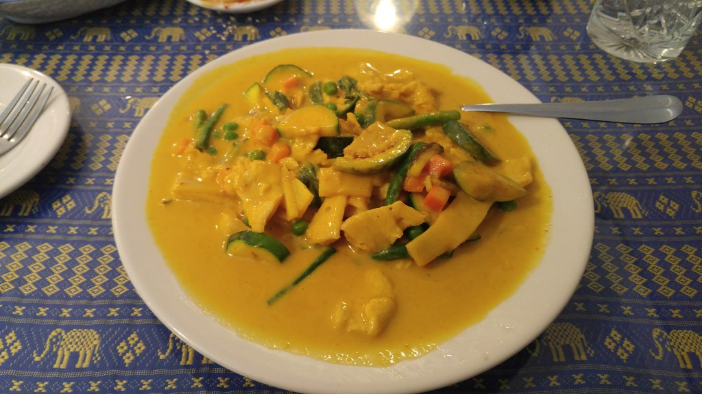

Home
Yellow Curry

Easy Thai Yellow Curry made with chicken and vegetables and served over steamed rice.
Ingredients
- Yellow Curry paste
- Chicken
- Vegetables (onion, carrots and potatoes)
- Coconut milk
- Ginger and garlic
- Cornstarch
- Fish sauce, lime juice and brown sugar
- Hot cooked rice
Steps
- Cook onions. Heat the oil in a large pot over medium low heat. Add the onion and saute for a few minutes until softened.
- Add vegetables. Add the carrots, potatoes, ginger, garlic and stir well.
- Add curry paste. Saute for 3 minutes.
- Add coconut milk. Add 1 ½ cans of coconut milk to the pot. Stir cornstarch into remaining ½ can of coconut milk and add to the pot.
- Boil then simmer. Once boiling, reduce heat and simmer for 20-30 minutes or until the chicken and potatoes are cooked through.
Adjust the thickness of the curry by adding more water to thin, if needed.
- Add flavor. Stir in the fish sauce, brown sugar and lime juice. Simmer 5 more minutes.
- Serve over rice, zoodles, or even. spaghetti squash!
Recipe Source